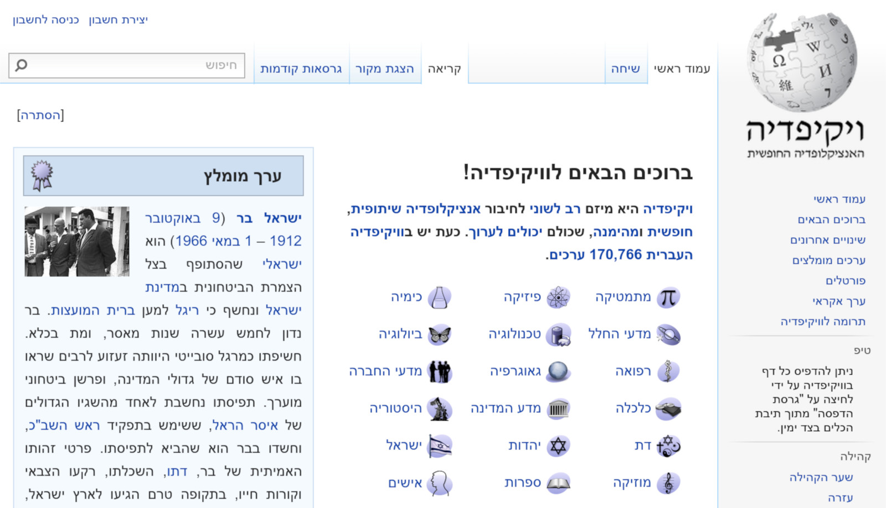
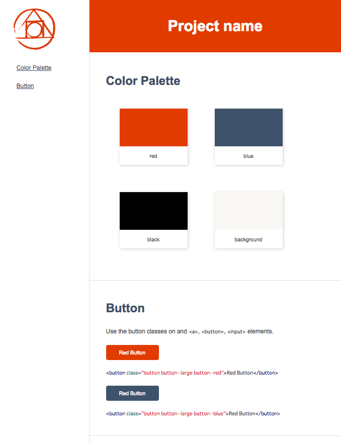
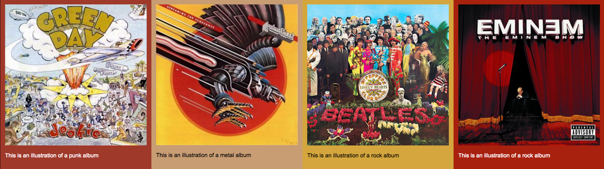
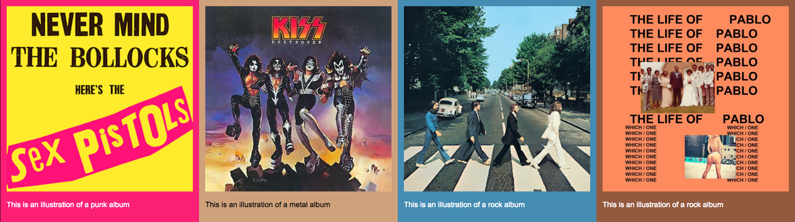
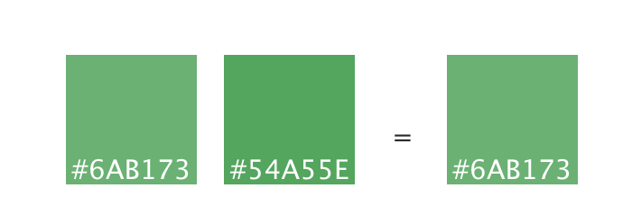

PostCSSThe Shape of CSS to come
A presentation about css in 50 slidesHistorique
ReWork(2013)

TJ Holowaychuk
Victoria, BC, Canada
Several months ago I started a project named Rework, a very fast, simple, flexible, and modular CSS preprocessor.
The biggest and most obvious question I get is how this tool compares to something like Stylus, LESS, or Sass, and why would you want to use it.
The simple answer is that Rework caters to a
different audience, and provide you the flexibility to craft the preprocessor you want, not the choices the author(s) have force on you.
Évolution

PostCSS(2013)

Andrey Sitnik
Saint Petersburg, Russia
PostCSS is a tool for transforming styles with JS plugins.
These plugins can lint your CSS, support variables and mixins, transpile future CSS syntax, inline images, and more.
PostCSS is used by industry leaders including Wikipedia, Twitter, Alibaba, and JetBrains. The Autoprefixer PostCSS plugin is one of the most popular CSS processors.
Everything that can be written in JS will be written in JS
Fonctionnement
Usage (Gulp)
var postcss = require('gulp-postcss');
var pseudoEnter = require('postcss-pseudo-class-enter');
var colorFunction = require('postcss-color-function');
var postcssZindex = require('postcss-zindex');
gulp.task('postcss', function() {
var processors = [
colorFunction(),
cssNano({
zindex: false
}),
autoprefixer({browsers: ['last 2 version', 'ie 9', 'opera 12.1', 'ios 6', 'android 4']}),
pseudoEnter()
];
}
Usage (Gulp)
...
var cssNanoOpts = {
zindex: false
}
gulp.task('postcss', function() {
var processors = [
colorFunction(),
cssNano(cssNanoOpts),
pseudoEnter()
];
}
Plus de 200 plugins
Github
PostCSS.parts
https://github.com/postcss/postcss/blob/master/docs/plugins.mdpostcss.parts

Types de plugins
Autonomes
(Optimisation / Statistiques / Analyse / Fallback)
Sugar Coating
(CSS4 Syntax (Transpiler) / Nouvelles propriétées)
CSS Nano (Pack)
Plus que de la minification
/* reduce shorthand even further */
margin: 10px 20px 10px 20px;
margin: 10px 20px;
/* reduce color values */
color: #ff0000;
color: red;
/* Reduce z-index */
z-index: 100;
z-index: 1000;
z-index: 1;
z-index: 2;
| Original (gzip) | 275 B | Minified (gzip) | 110 B |
| Difference | 165 B |
| Percent | 40% |
Problème
Autoprefixr
a {
display: -webkit-box;
display: -webkit-flex;
display: -ms-flexbox;
display: flex
}
Solution
a {
display: flex;
}
// résultat
a {
display: -webkit-box;
display: -webkit-flex;
display: -ms-flexbox;
display: flex
}
Le tout dans les deux sens
a {
-webkit-border-radius: 5px;
border-radius: 5px;
}
a {
border-radius: 5px;
}
rtlcss
rtlcss
a {
left: 10px;
text-align: left;
}
// rtl
a {
right: 10px;
text-align: right;
}
Cache Buster
.foo {
background-image : url('../images/index/logo.png');
}
// options dont : mtime, checksum
// résultat
.foo {
background-image : url('../images/index/logo.png?v14f32a475b8')
}
CSS Next
:root {
--mainColor: red;
--row: 12;
}
@custom-selector --heading h1, h2, h3, h4, h5, h6;
.post-article --heading {
margin-top: calc(10 * var(--row));
color: color( var(--mainColor) blackness(+20%) );
}
// résultat
.post-article h1, h2, h3, h4, h5, h6 {
margin-top: 120px;
color: #AA0E00;
}
CSS Next
Semantic media queries
@custom-media --medium-viewport (min-width: 30em);
@media (--medium-viewport) {
/* styles for medium viewport */
}
CSS Next / postcss-nesting
Custom media queries & nesting
.brand {
font-size: 12px;
@media (--medium-viewport) {
/* styles for medium viewport */
font-size: 16px;
}
}
postcss-responsive-images
.boo img {
image-size: responsive;
}
// result
.boo img {
max-width: 100%;
height: auto;
display: block;
}
Lost
Grille / Abstraction
.card {
lost-row: 1/3;
}
Grille - résultat
.card {
width: calc(99.99% * 1/2 - 7.5px);
}
.card:nth-child(n) {
float: left;
margin-right: 15px;
clear: none;
}
.card:last-child,
.card:nth-child(2n) {
margin-right: 0;
}
.card:nth-child(2n+1) {
clear: left;
}
postcss-style-guide

/* @start color */
:root {
--red: #e23B00;
--blue: #3f526b;
--black: #000;
--background: #faf8f5;
}
/* @end color */
/*
@styleguide
@title Button
Use the button classes on and a, button, input elements.
*/
.button {
display: flex;
align-items: center;
justify-content: center;
border-radius: 6px;
cursor: pointer;
}
.button--large {
width: 140px;
height: 40px;
font-size: 14px;
}
.button--red {
color: #fff;
background-color: var(--red);
}
.button--blue {
color: #fff;
background-color: var(--blue);
}
Vice Versa
Possible de compiler son css via un fichier de config yaml ou autre
postcss-instagram
// instagram
.boo {
filter: earlybird;
}

PostCSS Colorblind
// gulpfile.js
var colorblind = require("postcss-colorblind");
gulp.task('postcss-cblind', function() {
var processors = [
...
colorblind(tritanomaly)
];
}
PostCSS Colorblind
postcss-get-color
PostCSS plugin to get the prominent colors from an image.
 css-colorguard
Keep a watchful eye on your css colors.
postcss-colors-only
PostCSS plugin to remove all rules except those which contain one or more colors.
// input
.card {
margin-top: 15px;
background-color: teal;
padding: 15px;
color: red;
}
// output
.card {
background-color: teal;
color: red;
}
PRE CSS - Pack
mixins, imports, nesting, etc

Les plugins = JS
Simple a créer
PostCSS API
Plugin
function (css, result) {
// Runs through all of the nodes (declarations) in the file
css.walkDecls(declaration => {
declaration.value = declaration.value.split('').reverse().join('');
});
Hype
Everything that can be written in JavaScript will eventually be written in JavaScript.
— Atwood's Law